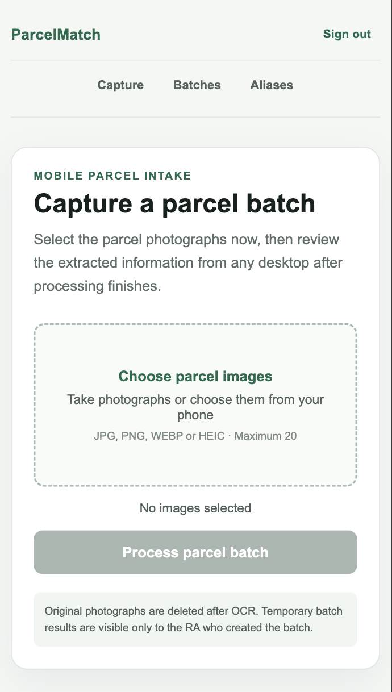

01
PythonFlaskJavaScriptGemini APIFirestoreRapidFuzzCloud Run
ParcelMatch
A mobile-first web application that turns parcel-label photos into verified resident matches. Gemini OCR extracts label information, RapidFuzz compares it against resident records, and uncertain results are routed to an authenticated RA dashboard for human review.
- Returns verified student IDs through a desktop batch workflow
- Built for real accommodation operations, privacy and accountable review
